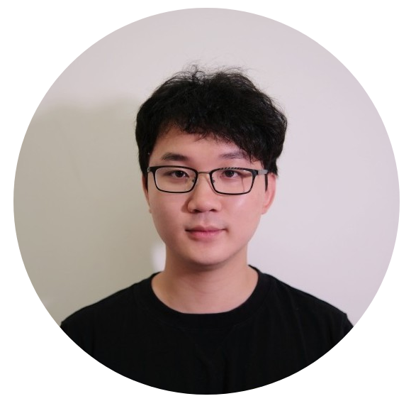

Xinran Zhao
PhD Candidate · Carnegie Mellon University

I am a fourth-year PhD candidate at CMU LTI, advised by Sherry Wu. My PhD is supported by the Amazon AI PhD Fellowship.
At Google DeepMind (2024, 2026), I worked as a student researcher on LLM planning, long-horizon code generation, and continual learning with Azade Nova and Hanie Sedghi. At Ai2 (2025), I worked on deep research agents with Varsha, Aakanksha, Joseph, Jay, and Jena.
I received my MSCS from Stanford, where I worked with Christopher Manning, and my bachelor's degree from HKUST. At HKUST and during my exchange at Cornell, I was fortunate to work with Yangqiu Song, Dit-Yan Yeung, and Claire Cardie.
I always feel lucky to meet great mentors along my journey, including but not limited to, Shikhar Murty, Hongming Zhang, and Esin Durmus.
I am on the 2026–27 industry job market, with a flexible graduation date!
Research
All research →I build highly autonomous language model agents that seek information, learn from experience, plan, and collaborate with people. Specifically, I work on:
Building agents that seek information and deliver it proactively.
- Knowing When to Stop: coding agents collect enough evidence that they are blocked, yet a third still exhaust their budget. An escalation tool cuts that from 34.0% to 6.7%.
- Intent-aware Deep Research (ICLR'26): deep research reports improve when the model makes explicit the implicit intents behind what to write and what to cite, by 12.3 points for small models.
- MoR (EMNLP'25): a zero-shot mixture of sparse, dense, and human retrievers, weighted per query.
- Revela (ICLR'26 Oral): trains dense retrievers through language modeling, without annotated query–document pairs.
Building agents that plan, code, and forecast their own outcomes.
- Action Sequence Similarity (ICLR'25): exemplars chosen by problem similarity can carry very different plans. Choosing by plan similarity instead improves planning accuracy by 11–40 points with 27% fewer exemplars.
- 3DCodeEdit: 2,592 instruction-guided edits over 108 Blender programs. The strongest models complete fewer than 60% of structural and style edits.
- Tea Leaves: can LLMs read the start of a training run and predict how it ends?
- ReSHAPE (BiAlign@NeurIPS'26 Oral): users' requests rule out plans they would accept. Showing concrete plans recovers them better than asking about preferences.
Building agents that debate, persuade, and stay honest about what they know.
- TreeDebater (ICLR'26): plans a competitive debate on two trees, one rehearsing attacks and defenses, one tracking the live flow to spend limited time on the points that matter. Human judges rate it 15.6% more persuasive than the prior best system.
- Real-Time Debate: takes debating to live speech, where the agent must plan while it listens and speaks.
- FaR (ACL'24): eliciting known facts first, then reflecting on them, lowers calibration error by 23.5% and lets the model voice concern when it is unsure.
Selected Honors and Awards
- Best Paper Award, FrontierIR Workshop at AAAI 2026 (Revela)
- Amazon AI PhD Fellowship, 2025 (two years of full tuition and stipend; $150,000 in AWS credits)
- Google RSGCP Award on LLM Planning ($30,000), 2024
- Google RS Conference Travel Scholarship ($3,000), 2024
- HKUST Academic Achievement Medal (Top 1%), 2021
Academic Events
- Winter, 2027 General chair, FrontierIR, the Second Workshop on New Frontiers in Information Retrieval at AAAI 2027.
- Fall, 2026 Invited panelist, Global Embodied Ecosystem Night at IROS 2026.
- Summer, 2026 Invited talk at Google DeepMind: Continual Learning for Coding Agents.
- Summer, 2025 Invited talk at UW H2 Group: Improving Large Language Model Planning with Action Sequence Similarity.
- Summer, 2024 Invited talk at Samaya AI: Towards Building Retrieval Systems in Complex Realistic Scenarios.
- Summer, 2022 Invited talk at the ICML Commonsense Tutorial: On Task Difficulty of Few-shot Learning.
- Spring, 2022 Invited talk at NUS, Department of Marketing: NLP as a Tool for Scientific Discovery.
Service
- General chair, FrontierIR, the Second Workshop on New Frontiers in Information Retrieval at AAAI 2027.
- Area chair for ACL and EMNLP (2024–present), and NAACL (2025–present).
- Reviewer for NeurIPS (2024–present), ICLR (2025–present), ICML (2025–present), and COLM (2024–present); previously for ACL, EMNLP, NAACL, EACL, AACL, AAAI, and ECCV.
Miscellaneous
Besides research, I also enjoy:
- Bodybuilding: I can deadlift 140 kg and squat 140 kg for sets.
- Debate: I was a member of the HKUST Mandarin Debate Team. We won first prize at the Bay Area Debate Championship and placed in the top eight at the sixth and seventh International Mandarin Debate Invitational in Singapore.
- Poetry: I write traditional Chinese poetry and have published a few poems in newspapers.
- Archery: I was an active member of the HKUST Archery Club.